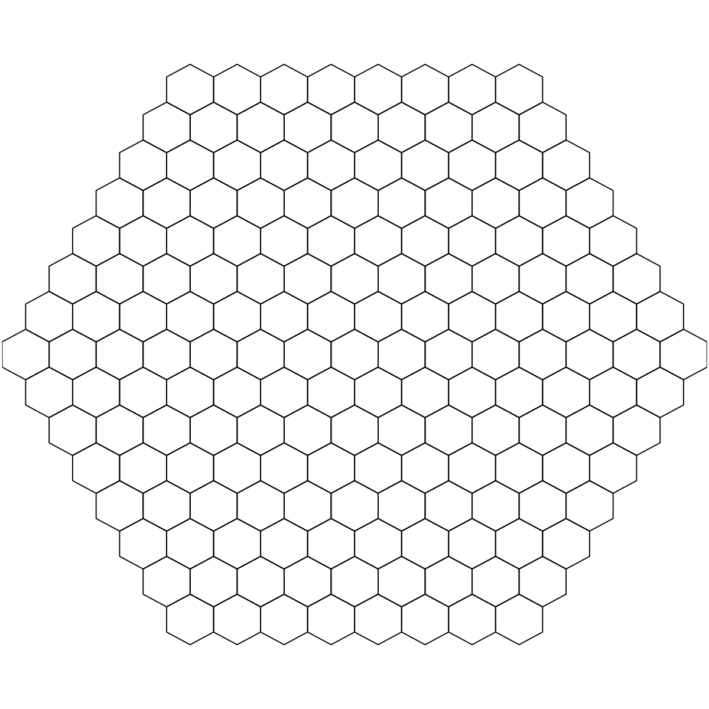

Start at 2016-06-24 11:46:47
First, define topology of a map grid (2016-06-24 11:46:47)...
Second, initialise the codebook matrix (169 X 3) using 'linear' initialisation, given a topology and input data (2016-06-24 11:46:47)...
Third, get training at the rough stage (2016-06-24 11:46:47)...
1 out of 2 (2016-06-24 11:46:47)
updated (2016-06-24 11:46:47)
2 out of 2 (2016-06-24 11:46:47)
updated (2016-06-24 11:46:47)
Fourth, get training at the finetune stage (2016-06-24 11:46:47)...
1 out of 7 (2016-06-24 11:46:47)
updated (2016-06-24 11:46:47)
2 out of 7 (2016-06-24 11:46:47)
updated (2016-06-24 11:46:47)
3 out of 7 (2016-06-24 11:46:47)
updated (2016-06-24 11:46:47)
4 out of 7 (2016-06-24 11:46:47)
updated (2016-06-24 11:46:47)
5 out of 7 (2016-06-24 11:46:47)
updated (2016-06-24 11:46:47)
6 out of 7 (2016-06-24 11:46:47)
updated (2016-06-24 11:46:47)
7 out of 7 (2016-06-24 11:46:47)
updated (2016-06-24 11:46:47)
Next, identify the best-matching hexagon/rectangle for the input data (2016-06-24 11:46:47)...
Finally, append the response data (hits and mqe) into the sMap object (2016-06-24 11:46:47)...
Below are the summaries of the training results:
dimension of input data: 1000x3
xy-dimension of map grid: xdim=15, ydim=15
grid lattice: hexa
grid shape: suprahex
dimension of grid coord: 169x2
initialisation method: linear
dimension of codebook matrix: 169x3
mean quantization error: 0.363010807708688
Below are the details of trainology:
training algorithm: batch
alpha type: invert
training neighborhood kernel: gaussian
trainlength (x input data length): 2 at rough stage; 7 at finetune stage
radius (at rough stage): from 4 to 1
radius (at finetune stage): from 1 to 1
End at 2016-06-24 11:46:47
Runtime in total is: 0 secs

r <- (xdim + 1)/2
nHex <- 1 + 6 * r * (r - 1)/2
){kind=link}